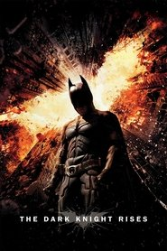
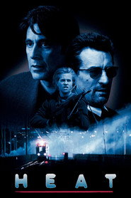
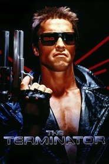

tonight: The Dark Knight Rises on HBO Max, because it makes it 8 for Christopher Nolan after The Dark Knight and Interstellar.

2012 · 165m · hbo max · already paid foryou're a movies guy, full stop — TV is like 12% of what you like, and the TV you do like is South Park, The Simpsons, early SNL-adjacent stuff.
the one crime drama you lit up for is Heat, and your own note on it is “the diner scene, two pros sizing each other up” — that's the tell. you want two heavyweights in a room, not a slow burn about a family.

Heat 1995 8
The Terminator 1984 8